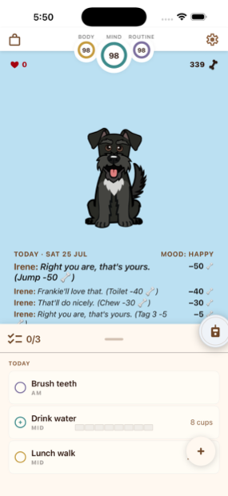
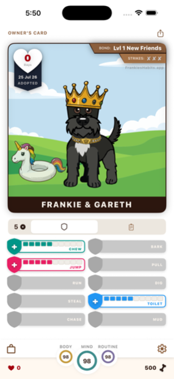
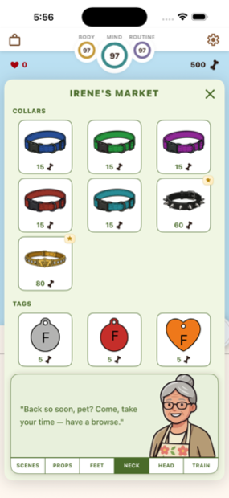
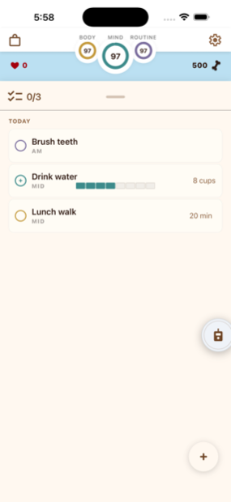
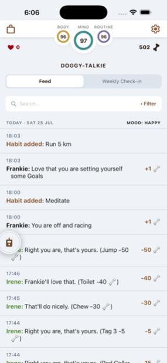
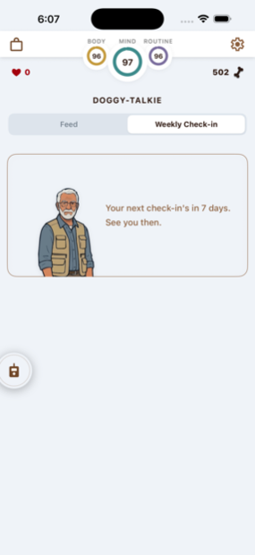
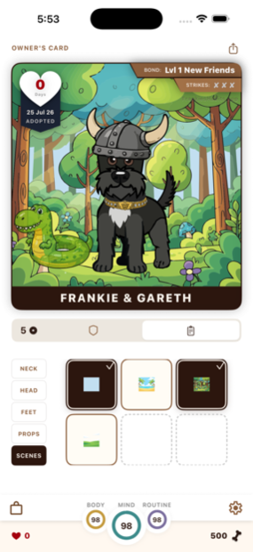

A virtual pet powered by real habits
Frankie is counting on you.
This miniature schnauzer has three health bars — Body, Mind and Routine — and only you can keep them full. Drink the water. Take the walk. Wind down on time. Do your habits and Frankie thrives; skip them and you'll be met with the saddest eyes on the App Store.
How it works
Your habits are Frankie's heartbeat.
No streak guilt, no charts to study. Just a small dog whose whole world depends on whether you looked after yourself today.
-
Foster Frankie
Every fostering starts the same way: a new dog, a clean slate, and thirty days to prove you can look after each other.
-
Do your habits
Build your own daily habits across Body, Mind and Routine. Frankie's health bars decay in real time — every habit you complete tops them back up.
-
Watch Frankie thrive
Good care means a happy, playful dog — and bones to spend at Irene's Market on collars, toys, scenes and training skills.
Frankie's world
Small dog. Fully furnished life.







The stakes
Yes, there are strikes.
Frankie isn't decoration — this is a dog with standards. Let the care slip for long enough and you'll earn a strike, marked plainly on your Owner's Card. Earn three, and Frankie is rehomed to someone who'll actually do the walking. Strikes aren't forever, though: two straight weeks of flawless habit-keeping clears the slate.
Fostering & adoption
Fostering is free. Forever.
Foster a Frankie at no cost, in 30-day cycles — at the end of each cycle your foster dog returns to the kennel and a new Frankie bounds in. When you're ready to make it official, adoption is $3/month and your Frankie stays for good.
- Keep your dog past day 30 — no more goodbyes
- Give your dog a name of your own choosing
- Exclusive cosmetics in Irene's Market
- Extra kennel days every month, and more
Payment is handled by Apple through your App Store account. Cancel any time in your Apple ID settings — you'll simply return to fostering.